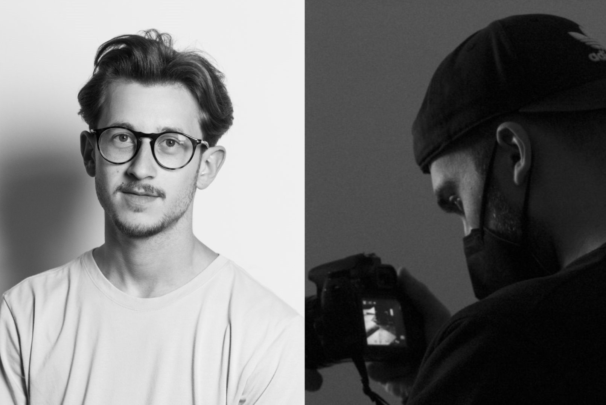

CHI SIAMO
Bruno Arcidiacono e Simone Santacroce sono due fotografi che hanno seguito un percorso di studi all'Accademia di Belle Arti di Catania. Specializzati nei più disparanti settori della fotografia, dal reportage di eventi, alla fotografia paesaggistica e di interni.
